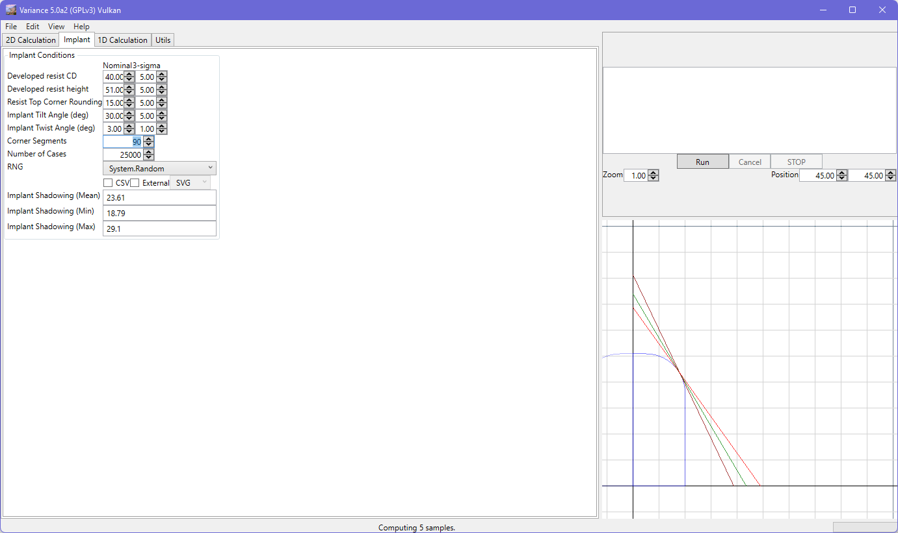

This is a tilted implant shadowing calculation system. It currently does not account for corner rounding in the resist other than the top corner rounding of the resist profile. The contour is generated from the internal shape engine.
The preview state shows the mean, minimum and maximum shadowing for the nominal resist contour (i.e. the implant 3-sigma is applied to the mean as appropriate). The Monte Carlo system evaluates all sources of variation and determines the mean and standard deviation.
The majority of the controls are self-explanatory, especially when one is already familiar with the multi-layer Monte Carlo system. Note that linear resolution values are not available because shadowing is a result of interaction with corners. Accuracy is therefore directly dependent on the corner resolution, which is defined by the corner segment value. Higher values yield a greater resolution.
The summary file output will report the effective resolution (i.e. edge resolution / accuracy, angular resolution / accuracy). You can also choose to export CSV and/or SVG output files, just like in the multilayer Monte Carlo system. Electing to save SVGs will cause considerable memory consumption during the run as the geometry is stored rather than cleared. The CSV is essentially free-of-cost, except for the time taken to write the file to disk at the end of the run.
Please consider that 90 degree tilt conditions (through variation) will result in an infinite shadow being cast. This condition is not ignored and will result in your entire run having an infinite mean and invalid standard deviation. You should ensure that your implant conditions do not cause this to arise.